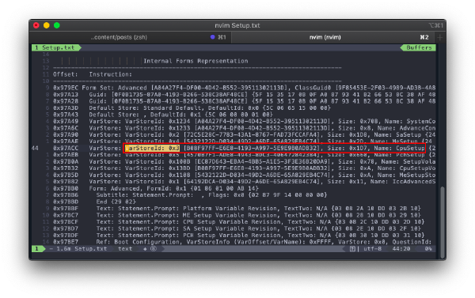
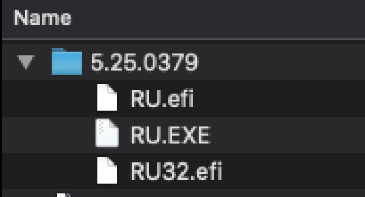
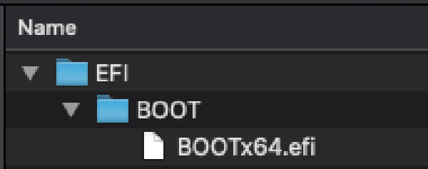

Saya sudah lama menggunakan Hackintosh, dari sekitar Tahun 2018 sampai saat ini masih memakainya. Alasan saya dengan Hackintosh ini karena menarik untuk dicoba, dimana saya harus mengenal laptop saya lebih dalam tidak hanya hardware, tetapi konfigurasi BIOSnya sendiri, dan bagaimana cara OS mengenali hardwarenya.
Salah satu hal yang harus diubah itu mengenai CFG Lock. CFG Lock ini singkatnya mengunci MSR 0xE2 untuk tidak bisa di write. MSR 0xE2 berperan sebagai power management.
Langkah-langkahnya:
Pertama, cari tahu dulu CFG Lock di memory BIOS. Dengan cara download BIOS dari web vendor laptopnya dengan versi yang sesuai dengan yang dipakai di laptop (Saya menggunakan laptop Acer E5-476G dengan BIOS yang sudah diupgrade ke 1.37, versi terakhir ketika membuat tulisan ini)
Extract file zipnya, dan extract lagi file .exe nya sehingga akan muncul seperti ini (OS yang dipakai sendiri tidak terbatas hanya di macOS, di linux dan Windows juga sama)
Setelah diextract, akan banyak file seperti gambar di atas, tetapi fokus pada file yang extensinya (.bin, .fd, .rom, atau bisa dalam extensi lain yang tidak biasa di windows) pada BIOS untuk laptop saya, tedapat 5 file .fd, sesuaikan dengan board dari laptopnya (harus dibongkar, untuk laptop saya sendiri menggunakan Z8VR)
Selanjutnya, buka file BIOS tersebut dengan UEFITool_NE (ada 2 UEFITool, pastikan UEFITool yang dipakai adalah UEFITool_NE yang satu grup dengan UEFIExtract_NE, UEFIFind_NE). Akan muncul seperti ini
Cari “Text” unicode dengan isi “CFG Lock”, dan akan muncul di hasil pencarian
Hasil pencarian akan muncul seperti gambar ke-2 diatas, klik 2x dan akan di arahkan ke lokasinya, lalu klik kanan pada parent-nya (bisa berbeda, tetapi pada kasus saya disini adalah DriverSampleDxe), klik kanan, dan pilih “Extract as-is”, lalu save sebagai .bin
Sekarang extract file yang sudah disimpan sebagai .bin tadi menggunakan ifrextract ke dalam format .txt. buka terminal/cmd, lalu jalankan ifrextract dengan argument pertama adalah filenya, dan argument kedua adalah nama hasil extractnya seperti gambar dibawah
Buka file .txt tadi dengan text editor apa saja, lalu cari dengan kata kunci “CFG Lock” (disini saya menggunakan nvim pada terminal), lalu catat VarOffset dan VarStore-nya (yang saya tandai dengan warna merah). Disini saya dapat VarOffset 0x3C dan VarStore 0x3. dan bisa diliat 2 baris dibawahnya (yang saya tandai dengan warna kuning) adalah value yang bisa diubah nanti (0x0 berarti CFG Lock di disable, dan 0x1 berarti enable)
Setelah itu, cari tahu dulu dimana “CFG Lock” berada, caranya search dengan kata kunci VarStoreId: 0x3 (0x3 disini didapat dari nilai VarStore pada poin 8). Disini akan didapatkan CFG Lock disimpan pada variabel bernama CpuSetup, catat juga ini.

Setelah alamat dari CFG Lock, nilai yang boleh digunakan, dan dimana CFG Lock ditempatkan diketahui, sekarang beralih ke tool untuk mengubahnya. Toolnya bernama RU, bisa didownload di sini (saya sendiri menggunakan RU 5.25.0379 beta, karena yang 5.27 ketika tulisan ini dibuat tidak bisa menerima inputan dari keyboard). Terdapat beberapa file, RU.EXE, RU32.efi, RU.efi. untuk RU.EXE ini tidak bisa digunakan oleh windows karena untuk MSDOS, jadi disini kita akan menggunakan RU.efi (atau RU32.efi jika arsitektur processornya masih tidak support 64bit)

Jadikan RU.efi tadi sebagai UEFI bootable device, dengan cara format flashdrive ke FAT32 dan partition table MBR (atau jika partition table sebagai GPT, biasanya partisi EFI sudah dibuat otomatis dan tinggal mount saja). Lalu buat folder dengan struktur “(partisi FD)/EFI/BOOT/”, dan pindahkan RU.efi tadi kedalam folder BOOT, dan ubah menjadi BOOTx64.efi. dan flashdrive siap untuk boot.

Boot ke flashdrive, tampilan awal akan muncul about, tekan enter saja. lalu tekan tombol ALT + =.
Setelah ditekan, akan muncul list variabel name, cari variabel yang sesuai dengan VarStoreId dari langkah 9, bisa gunakan tombol panah atas-bawah untuk scrolling (pada kasus saya bernama CpuSetup).
Jika sudah ketemu, tekan enter, dan tampilan akan berubah seperti ini
Sekarang cari di matrix tersebut dengan panah sesuai guide di atas dan kiri (dalam kasus saya, varOffset bernilai 0x3C, maka cari 003C, berarti 0030 di sebelah kiri, dan 0C di atas)
Setelah ketemu seperti pada gambar diatas, jika nilai pada matrix itu 01, maka dipastikan CFG Lock enabled. Disini kita akan disable CFG Lock dengan ubah menjadi 00 dengan cara tekan enter, lalu masukan nilai 00, lalu enter. maka nilai akan berubah seperti dibawah ini
Sekarang tinggal save dengan cara tekan tombol CTRL + W, dan keluar dari RU tadi dengan cara ALT + Q
Boot seperti biasa, jika menggunakan Hackintosh dan bootloader OpenCore, sudah tidak membutuhkan lagi patch AppleCpuPmCfgLock dan AppleXcpmCfgLock pada Kernel -> Quirks di config.plist
Cara ini juga bisa digunakan jika ingin mengubah setting yang tidak ada di BIOS karena disembunyikan. Seperti pilihan overclock lock, dan banyak lagi lainnya.. bisa diexplore lagi mengenai langkah ke-8 diatas.
DISCLAIMER: Resiko ditanggung masing-masing, saya tidak bertanggung jawab atas kerusakan yang terjadi karena tulisan ini, tulisan ini dibuat sebagai dokumentasi saya.
Meskipun begitu, cara ini bisa dibilang masih aman karena yang diubah adalah setting pada BIOS yang seharusnya ada tetapi disembunyikan oleh vendor laptop, jika terjadi hang atau masalah lain, bisa melakukan reset BIOS seperti biasanya.


{kind=link}
{kind=link}
{kind=link}
{kind=link}
{kind=link}
{kind=link}
{kind=link}
{kind=link}
{kind=link}
{kind=link}
{kind=link}
{kind=link}
{kind=link}
{kind=link}